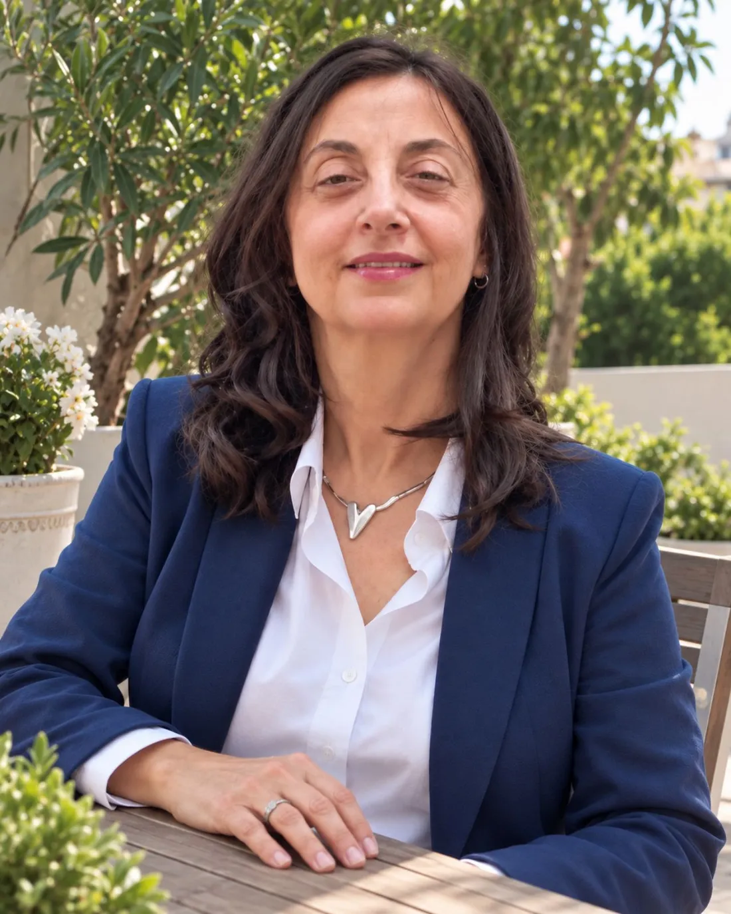
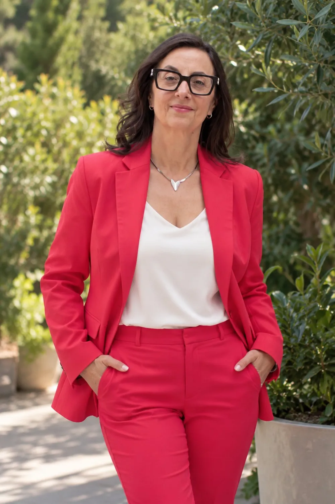
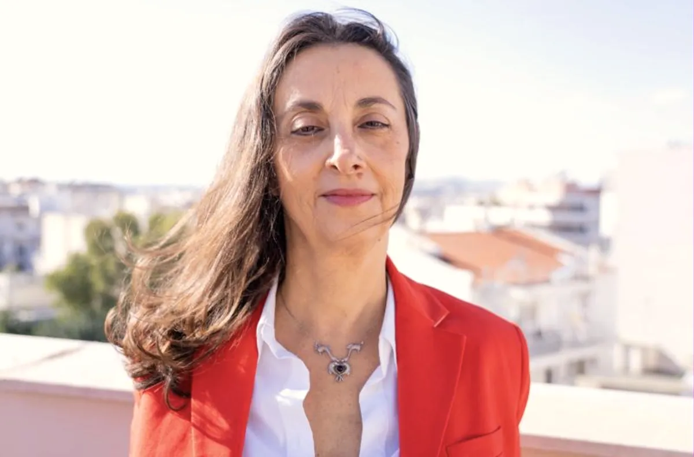
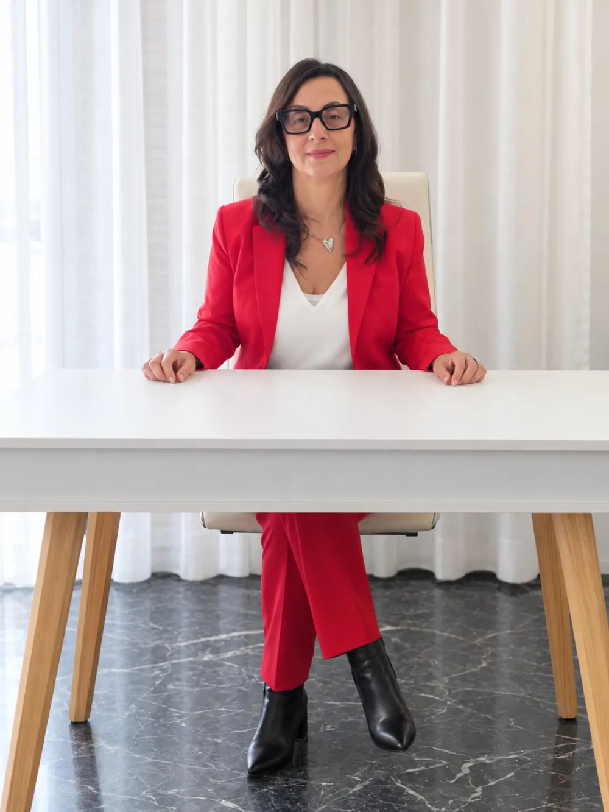
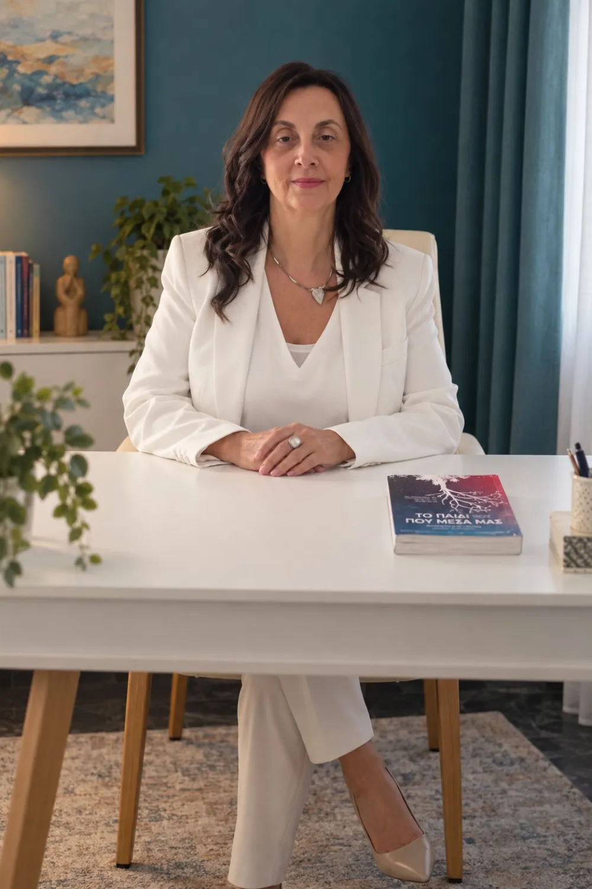
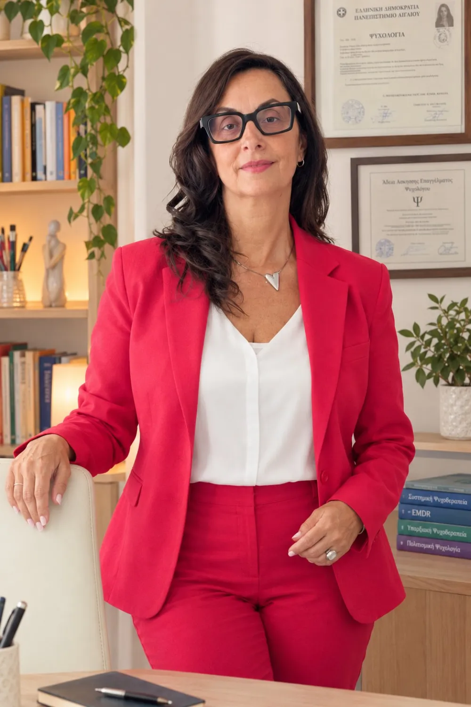
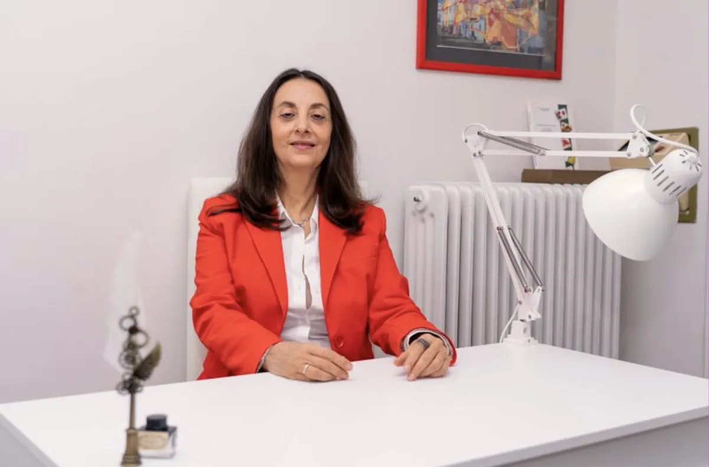

Ενήλικες
Άγχος και κρίσεις πανικού, ιδεοψυχαναγκασμοί, καταθλιπτικά συμπτώματα, πένθος, υπαρξιακές δυσκολίες, αυτοεκτίμηση, δυσκολίες στις σχέσεις, μεταβάσεις ζωής και τραυματικές εμπειρίες.
Συστημική ψυχοθεραπεία μέσα από τον διάλογο, τη σχέση και τη δημιουργική έκφραση.


Αλλά μέσα σου, μπορεί να νιώθεις πολύ διαφορετικά: υπερβολική σκέψη, συνεχής πίεση, εξάντληση, άγχος, ενοχές ή την αίσθηση ότι είσαι διαρκώς άδεια/ος/ο από ενέργεια.
Ίσως προσπαθείς να διαχειριστείς τις απαιτήσεις της εργασίας, των σχέσεων και της οικογενειακής ζωής, να ανταποκριθείς σε πολλούς διαφορετικούς ρόλους, να προσαρμοστείς στη ζωή στο εξωτερικό ή να κουβαλάς ακόμη τον αντίκτυπο δύσκολων εμπειριών ζωής.
Αν αναγνωρίζεις τον εαυτό σου σε κάτι από αυτά, δεν χρειάζεται να συνεχίσεις να τα κουβαλάς χωρίς στήριξη.
Η θεραπεία μπορεί να γίνει ένας ασφαλής χώρος όπου, για λίγο, δεν χρειάζεται να είσαι ο άνθρωπος που πρέπει πάντα να αντέχει, να φροντίζει, να ανταποκρίνεται και να έχει τα πάντα υπό έλεγχο.
Μέσα από τη θεραπευτική διαδικασία μπορείς να αρχίσεις να ακούς πιο ουσιαστικά τι συμβαίνει μέσα σου, να κατανοήσεις τι σε εξαντλεί, τι σε δυσκολεύει και ποια μοτίβα επαναλαμβάνονται στη ζωή και στις σχέσεις σου.
Σιγά σιγά, μπορεί να δημιουργηθεί περισσότερος χώρος για ηρεμία, σταθερότητα, προσωπικά όρια και ουσιαστικότερη επαφή με τις ανάγκες και τις επιθυμίες σου.
Στόχος δεν είναι απλώς να αντέχεις καλύτερα. Είναι να νιώσεις πιο συνδεδεμένη/ος/ο με τον εαυτό σου, πιο παρούσα/ών/όν στη ζωή και στις σχέσεις σου και πιο ελεύθερη/ος/ο να ζεις με τρόπο που να σε εκφράζει πραγματικά.
Γράφω για όλους, όλες και όλα
Εργάζομαι με συστημική και συνθετική προσέγγιση, μέσα από τον διάλογο, τη θεραπευτική σχέση και, όπου αυτό ταιριάζει στη θεραπευτική διαδικασία, τη δημιουργική έκφραση και την τέχνη.
Στο γραφείο μου στη Νέα Σμύρνη και διαδικτυακά εργάζομαι με παιδιά, εφήβους, ενήλικες και γονείς, με ανθρώπους διαφορετικών οικογενειακών, κοινωνικών και πολιτισμικών διαδρομών.
Η θεραπεία δεν έχει στόχο απλώς να σε βοηθήσει να αντέχεις περισσότερο. Μπορεί να γίνει ένας χώρος όπου θα κατανοήσεις βαθύτερα τι σου συμβαίνει, θα αναγνωρίσεις τα μοτίβα που επαναλαμβάνονται και θα ανακαλύψεις διαφορετικούς τρόπους να σχετίζεσαι με τον εαυτό σου, τους άλλους και τη ζωή σου.

Άγχος και κρίσεις πανικού, ιδεοψυχαναγκασμοί, καταθλιπτικά συμπτώματα, πένθος, υπαρξιακές δυσκολίες, αυτοεκτίμηση, δυσκολίες στις σχέσεις, μεταβάσεις ζωής και τραυματικές εμπειρίες.
Συναισθηματικές και συμπεριφορικές δυσκολίες, δυσκολίες στο σχολείο και στις σχέσεις, ΔΕΠΥ, αυτισμός και νευροδιαφορετικότητα, επιλεκτική σίτιση — και στήριξη των γονέων σε κάθε βήμα.
Συντονίζω ομάδες παιδιών, ενηλίκων και γονέων. Στον θεραπευτικό χώρο υπάρχει θέση για ανθρώπους της ΛΟΑΤΚΙ+ κοινότητας, για μετανάστες, παλιννοστούντες και ανθρώπους που ζουν ή έχουν μεγαλώσει ανάμεσα σε περισσότερους από έναν πολιτισμούς.

Μέσα από μια πρακτική βασισμένη σε τεκμηριωμένα επιστημονικά δεδομένα, θα αναπτύξεις ψυχική ανθεκτικότητα, θα βρεις τον τρόπο να εστιάζεις, θα απελευθερωθείς από παλιές πεποιθήσεις και προσδοκίες και θα πάρεις συνειδητές, θετικές αποφάσεις που θα σε φέρουν πιο κοντά σε μια ζωή με περισσότερη αυτογνωσία, αποδοχή και εξέλιξη.
Η θεραπευτική μου προσέγγιση είναι συνθετική και προσαρμόζεται στις ανάγκες, την προσωπικότητα και την ιδιαίτερη ιστορία κάθε ανθρώπου. Βασίζεται κυρίως στη Συστημική Ψυχοθεραπεία και εμπλουτίζεται από την υπαρξιακή και πολιτισμική ματιά, την EMDR, καθώς και από στοιχεία της Γνωσιακής–Συμπεριφορικής προσέγγισης.

Ο κύριος άξονας της δουλειάς μου. Συνδέουμε όσα σε δυσκολεύουν με το προσωπικό και σχεσιακό σου πλαίσιο — την οικογένεια, τις σχέσεις, τα μοτίβα που επαναλαμβάνονται — ώστε να αλλάξει όχι μόνο το σύμπτωμα αλλά και ο τρόπος που σχετίζεσαι.
Για μένα, κάθε άνθρωπος χρειάζεται να γίνεται κατανοητός μέσα στο δικό του πλαίσιο: την προσωπική και οικογενειακή του ιστορία, τις σχέσεις του, τον πολιτισμό, την ταυτότητα, τις εμπειρίες και τα νοήματα που έχει διαμορφώσει στη ζωή του.
Στοιχεία της EMDR και εργαλεία της Γνωσιακής–Συμπεριφορικής προσέγγισης εμπλουτίζουν τη θεραπεία, όπου βοηθούν στη διαχείριση του άγχους, των φοβιών και άλλων συμπτωμάτων.
Η εικόνα, το σχέδιο, το παιχνίδι, τα σύμβολα και διαφορετικά δημιουργικά μέσα μπορούν, όταν ταιριάζουν στον άνθρωπο και στη θεραπευτική διαδικασία, να ανοίξουν έναν διαφορετικό δρόμο για την έκφραση και την κατανόηση εμπειριών που δεν είναι πάντα εύκολο να αποδοθούν μόνο με λέξεις.
Στόχος της θεραπείας είναι να δημιουργηθεί μια διαδικασία μέσα από την οποία μπορείς να κατανοήσεις βαθύτερα όσα ζεις, να αναγνωρίσεις τα μοτίβα που σε δυσκολεύουν, να έρθεις πιο κοντά στις ανάγκες και στις δυνατότητές σου και να ανακαλύψεις νέους τρόπους να σχετίζεσαι, να επιλέγεις και να προχωράς.
Στο γραφείο στη Νέα Σμύρνη ή online — ατομικά, ως ζευγάρι, ως οικογένεια ή σε ομάδα.
Για ενήλικες που θέλουν να κατανοήσουν τι τους συμβαίνει: άγχος, κρίσεις πανικού, φοβίες, ιδεοψυχαναγκασμοί, κατάθλιψη, πένθος, αυτοεκτίμηση.
Συμβουλευτική σχέσεων και θεραπεία ζεύγους, καθώς και στήριξη στη διάρκεια ή μετά από ένα διαζύγιο.
Η οικογένεια ως σύστημα: επικοινωνία, ρόλοι, αλλαγές και δυσκολίες που αφορούν όλα τα μέλη της.
Για γονείς, αλλά και για γονείς μαζί με το παιδί τους — με ιδιαίτερη εμπειρία σε ΔΕΠΥ, αυτισμό και νευροδιαφορετικότητα.
Παιγνιοθεραπεία και θεατρικό παιχνίδι: το παιδί εκφράζεται με τον δικό του τρόπο, μέσα από το παιχνίδι, τον ρόλο και τη φαντασία.
Θεραπεία μέσα από τις εκφραστικές τέχνες — σχέδιο, εικόνα, σύμβολα — για όσα δύσκολα λέγονται μόνο με λέξεις.
Ομάδες ψυχοθεραπείας ενηλίκων και ομάδα εφήβων για τη διαχείριση του άγχους των εξετάσεων.
Πιστοποιημένη θεραπεύτρια σίτισης (Get Permission Approach, Marsha Dunn Klein): στήριξη παιδιών και γονέων γύρω από το φαγητό.
Ψυχοθεραπεία με βιντεοκλήση, από όπου κι αν βρίσκεσαι — ιδανική και για ανθρώπους που ζουν στο εξωτερικό.
Ειδικό κόστος για ΑμεΑ, ανέργους και φοιτητές. Ακύρωση ραντεβού έως 3 ώρες πριν.

Είμαι αδειούχος Ψυχολόγος, Συστημική και Οικογενειακή Ψυχοθεραπεύτρια, με πολυετή εμπειρία στην υποστήριξη παιδιών, εφήβων, ενηλίκων και οικογενειών.
Η επαγγελματική και εκπαιδευτική μου πορεία έχει διαμορφωθεί μέσα από διαφορετικά πεδία της ψυχολογίας, της ψυχοθεραπείας και της ειδικής αγωγής. Έχω εκπαιδευτεί στη Συνθετική Ψυχοθεραπεία, με κύριο άξονα τη Συστημική προσέγγιση και στοιχεία από την Υπαρξιακή και Πολιτισμική προσέγγιση, ενώ διαθέτω γνώσεις EMDR και Γνωσιακής–Συμπεριφορικής προσέγγισης.
Παράλληλα, έχω πραγματοποιήσει σπουδές στην Ειδική Αγωγή στο Πανεπιστήμιο Αιγαίου και έχω πολυετή εμπειρία στην εργασία με παιδιά με διαφορετικές αναπτυξιακές και εκπαιδευτικές ανάγκες, όπως παιδιά στο φάσμα του αυτισμού, παιδιά με νοητική αναπηρία, παιδιά με προβλήματα όρασης και τύφλωση, καθώς και παιδιά με σοβαρές κινητικές δυσκολίες και τετραπληγία.
Η επαγγελματική μου διαδρομή περιλαμβάνει επίσης την εικαστική και δημιουργική έκφραση ως θεραπευτικό μέσο, καθώς και εξειδίκευση στην επιλεκτική σίτιση. Η μακρόχρονη εμπειρία μου με παιδιά και οικογένειες έχει εμπλουτίσει ουσιαστικά τον τρόπο με τον οποίο προσεγγίζω σήμερα κάθε άνθρωπο και κάθε θεραπευτική σχέση.
Για μένα, η ψυχοθεραπεία είναι πάνω απ’ όλα ένας χώρος ουσιαστικής συνάντησης. Ένας ασφαλής χώρος όπου μπορούμε να κατανοήσουμε όσα ζούμε, νιώθουμε και επαναλαμβάνουμε, να τα δούμε μέσα από μια διαφορετική ματιά και να δημιουργήσουμε σταδιακά νέους τρόπους σχέσης με τον εαυτό μας και τους άλλους.
Λίγα βήματα από το γήπεδο του Πανιωνίου, με ζωγραφιές, χρώμα και υλικά για δημιουργική έκφραση — ένας χώρος για να σταθείς, να μιλήσεις ή απλώς να είσαι.
Μια εξαιρετική ψυχοθεραπευτρια!!! Κατανόησε σε βάθος τους προβληματισμούς μου και έδειξε τεράστια ενσυναίσθηση. Με καθοδήγησε σωστά και με επαγγελματισμό. Έφερα σε ισορροπία την ψυχολογία μου και διεκδίκησα τους στόχους μου!! Ανθή σε ευχαριστώ πολύ!
Επικοινώνησα με την κα Θωμά για ένα προσωπικό μου θέμα και από την πρώτη συνάντηση μας, αισθάνθηκα ότι με ακούει με προσοχή,στοργικοτητα και σεβασμό. Ήταν εκει για εμένα με ολη της την παρουσία. Η κατανοηση που μου έδειξε με συγκινησε. Ξανασυναντηθηκαμε και πλέον έχουμε κλείσει συνεδρίες για-τους επόμενους μήνες. Αξιοπρεπης ψυχοθεραπευτρια και εξαίρετη επιστήμονας. Νιωθω οικειοτητα μαζι της και χαρα που βρηκα επιτέλους αυτή που μου ταιριάζει μετα απο πολυ ψαξιμο.Το σημαντικότερο για εμένα πλέον είναι ότι η αυτογνωσία μου και η αυτοβελτιωση μου πλέον πραγματοποιείται μεσα-σε ένα πλαίσιο αυτοσεβασμου. Η ψυχή μου φροντιζεται με τον καλύτερο τρόπο και είναι ένα δώρο που προσφέρω πια σε εμένα οπου μπορώ να πω την αλήθεια μου δίχως φόβο και δισταγμό. Η κα Θωμα είναι διαρκώς δίπλα μου σε όλο αυτό το ψυχοθεραπευτικο μου ταξίδι και με αποδέχεται πλήρως. Αυτό μου δίνει δύναμη να συνεχίζω. Είμαι ευγνώμων.
Ξεκίνησα με την κ.Ανθη θεραπεία για να διαχειριστω προβλήματα που είχα με τον έφηβο γιο μου. Έδειξε από την αρχή πως μπορεί να κατανοήσει τα προβλήματα μου και να προσφέρει καθοδήγηση. Είναι ένας ζεστός άνθρωπος με γνώσεις σε θέματα ψυχικής υγείας και σε ψυχολογία εφήβων. Συνεχίζω μαζί της και νιώθω πως έχουν γίνει πολλές βελτιώσεις τόσο στη σχέση μου με το παιδί μου όσο και στη δική μου ψυχολογία.
Με έχει βοηθήσει πάρα πολυ σε όλα! Προσιτή, επεξηγηματική και πραγματικά ενδιαφερεται να σε βοηθήσει. Την εμπιστευομαι απολυτα και την προτεινω ανεπιφυλακτα!
Η κα Θωμά μου στάθηκε με πραγματικό νοιάξιμο και ενδιαφέρον, κάτι που έκανε τη θεραπευτική διαδικασία ουσιαστική και αποτελεσματική την συστήνω ανεπιφύλακτα!!!
Έμπειρη στο αντικείμενο εργασίας της και άμεση στην επίλυση των οποίων προβλημάτων προέκυψαν. Ανθρώπινη και φιλική με επαγγελματισμό και γνώσεις έχει καταφέρει να φέρει σε ισσοροπια το οποίο θέμα έχω συζητήσει μαζί της δίνοντας μου όχι μόνο συμβουλές αλλά και άμεσες λύσεις.
Η δρ. Θωμά είναι εξαιρετική επιστήμονας. Η προσέγγισή της είναι πολύ ανθρωπιστική, η δουλειά της φτάνει σε βάθος και βοηθάει μακροπρόθεσμα και πρακτικά στην κατάκτηση σταθερής κι υγιούς ψυχικής-πνευματικής-σωματικής κατάστασης. Συνιστώ τις συνεδρίες της σε ανθρώπους που θέλουν να ενισχύσουν την αυτογνωσία τους και να αποκτήσουν την ικανότητα να μετατρέπουν κάθε "κόκκινο φως" σε "πράσινο" και να αναγνωρίζουν ευθύς τα ήδη "πράσινα" ενισχύοντάς τα. Είναι ξεχωριστή στη δουλειά της γιατί γνωρίζει ότι δεν πρέπει να μας διδάξει κάτι, αλλά να μας καθοδηγήσει να βρούμε τον τρόπο να μάθουμε μόνοι μας και παίρνοντας οι ίδιοι τα ινία να κάνουμε τη ζωή μας καλύτερη. Είμαι ευγνώμων που έλαβα τη βοήθειά της όποτε κι αν την αναζήτησα.
Η κ. Θωμά είναι καταρτισμένη επιστήμονας με πολλές γνώσεις στο αντικείμενο της, όμως το κυριότερο είναι η ζεστασιά που σου εμπνέει. Διερεύνησε σε βάθος το ζήτημα μου και δεν αισθάνθηκα σε καμία στιγμή της συνεδρίας άβολα ή δυσάρεστα. Την συστήνω ανεπιφύλακτα!
Είναι πραγματικά μία εξαίρετη επιστήμονας και υπέροχος άνθρωπος. Μετά από έναν χρόνο συνεδρίας, νιώθω εξαιρετικά τυχερή που τη γνώρισα. Η εμπειρία μου μαζί της δεν μένει απλά σε μια ψυχοθεραπεία για την αντιμετώπιση του προβλήματός μου, αλλά βελτίωσε σημαντικά τη ζωή μου σε πολλούς τομείς. Είναι έμπειρη, αλλά και προσιτή, με γεμίζει δύναμη κι αισιοδοξία. Την εμπιστεύομαι πλήρως και τη συστήνω ανεπιφύλακτα. Με την αμεσότητα και την προσοχή της κατάφερε να αναδείξει τα πραγματικά μου προβλήματα και να προσφέρει εύστοχες και συγκεκριμένες κατευθύνσεις για την επίλυσή τους. Είναι μια αξιόπιστη Ψυχολόγος που δείχνει πραγματικό ενδιαφέρον για τον άνθρωπο μπροστά της.
Μέσα στις συνεδρίες αντιλήφθηκα τι με εμπόδιζε να πάρω τις αποφάσεις που τόσο καιρό επιθυμούσα. Βρήκα την δύναμη να αλλάξω. Συνειδητοποίησα τα θέλω μου και ξεπέρασα την ανημπόρια. Προχώρησα σε μια θεληματική εποικοδομητική δράση και αισθάνομαι επιτέλους ότι βρήκα την ψυχοθεραπεύτρια που με υπομονή αλλά και εμπειρία με οδηγεί στην αυτοπραγμάτωση.
Η συγκεκριμένη ψυχοθεραπεύτρια με έκανε να νιώσω άνετα και αυτό για εμένα είναι ένα σημαντικό και θετικό στοιχείο. Η αίσθηση της άνεσης που δημιούργησε μου πρόσφερε ένα ασφαλές περιβάλλον. Στο παρελθόν είχα δυσκολία να ανοίξω και να μιλήσω για τα θέματα που με απασχολούσαν. Το γεγονός ότι η ψυχοθεραπεύτριά με βοήθησε να το ξεπεράσω είναι ενθαρρυντικό. Η αίσθηση εμπιστοσύνης και ασφαλείας που δημιουργήθηκε επέτρεψε στις συνεδρίες να γίνονται πιο παραγωγικές και ευεργετικές για εμένα. Επίσης η ενεργητική ακρόαση με την οποία με αντιμετώπισε με βοήθησε να εξερευνήσω βαθύτερα τα συναισθήματά του και τις σκέψεις μου, καθώς και να αντιληφθώ πιθανές συνδέσεις ή προτεραιότητες.
Η Ψυχοθεραπεύτρια με αντιμετωπίζει με σεβασμό και ευαισθησία, δείχνοντας κατανόηση για τις ανάγκες μου. Με ενθαρρύνει να ανακαλύψει τον εαυτό μου και να καθορίσω συγκεκριμένους στόχους θεραπείας. Η εμπιστευτικότητα είναι προφανής, καθώς δίνει έμφαση στο απόλυτο απόρρητο. Επιπλέον, εκπέμπει αξιοπιστία και εμπιστοσύνη, προσφέροντας ένα ασφαλές περιβάλλον για την εξέταση προσωπικών μου θεμάτων.
Η ψυχοθεραπεύτρια με την οποία συνεργάζομαι είναι εξαιρετική διότι δημιουργεί ένα θεραπευτικό κλίμα που είναι ταυτόχρονα ασφαλές και εμπιστευτικό. Αισθάνομαι ότι μπορώ να εκφράσω ελεύθερα τις σκέψεις και τα συναισθήματά μου αφού αναγνωρίζει τις ατομικές μου ανάγκες, χωρίς ίχνος κριτικής. Η εμπλοκή της είναι ενεργή, καθώς ακούει προσεκτικά και ανταποκρίνεται με εμπειρογνωμοσύνη, καθιστώντας κάθε συνεδρία εποικοδομητική. Είναι προφανές πως διατηρεί συνεχή ενημέρωση, παρακολουθώντας τα τελευταία επιστημονικά δεδομένα και τις προηγμένες έρευνες στον τομέα της ψυχοθεραπείας. Η συνεργασία μας υπερβαίνει τις προσδοκίες μου, και την προτείνω ανεπιφύλακτα για μια θετική θεραπευτική εμπειρία
Παρουσιάζει εξαιρετικές επικοινωνιακές δεξιότητες και ευαισθησία στα συναισθήματα μου. Με επίκεντρο την αποδοχή και υποστήριξη, μου δίνει χώρο ως ένα δοχείο που εμπεριέχει την πολυπλοκότητα μου. Με σεβασμό και αυθεντικότητα, μεταδίδει ένα αίσθημα ασφάλειας που με ενθαρρύνει να μοιραστώ. Η παρουσία της εμπνέει σεβασμό και εμπιστοσύνη, δημιουργώντας ένα περιβάλλον που ευνοεί τη θετική θεραπευτική σχέση. Η προσέγγισή της επικεντρώνεται στην ανάδειξη του εσωτερικού μου κόσμου ενθαρρύνοντας με να βρω δικές μου λύσεις και να ανακαλύψω νέες πτυχές του εαυτού. Η έμφαση στην ενσυναίσθηση με βοηθά στη δημιουργία ενός νέου νοήματος στη ζωή και στον ορισμό και την επίτευξη προσωπικών στόχων.
Επιδεικνύει ενσυναίσθηση και δείχνει πραγματικό ενδιαφέρον για τις ανάγκες μου. Καθορίζουμε από κοινού τους θεραπευτικούς στόχους. Υποστηρίζει τις υποθέσεις της πάνω σε επιστημονικές θεωρίες και μέσω συζήτησης προσπαθούμε από κοινού να κατανοήσουμε τα σημεία δυσκολίας μου. Με ενθαρρύνει να εστιάζω στην επίλυση ενός προβλήματος και όχι αποκλειστικά στο πρόβλημα, ενώ επίσης με βοηθά να αντανακλώ τον εαυτό μου κατά τη συνεδρία. Είναι τυπική στην ώρα και ευέλικτη στη διαμόρφωση προγράμματος. Μέσα στην εβδομάδα βρίσκει χρόνο και μελετά το ιστορικό μου, ώστε να κατανοεί τις ανάγκες μου και να συζητάμε σχετικά με αυτές.
Στις συνεδρίες ένιωθα ότι μπορώ να είμαι ο εαυτός μου χωρίς να κρύβομαι . Ένιωθα εμπιστοσύνη και με την θεραπεύτρια μου υπήρχε μια άριστη συνεργασία στα θέλω μου και στις επιθυμίες μου να βελτιωθώ σαν άνθρωπος . Ήταν δίπλα μου σε πολύ δύσκολες στιγμές και πραγματικά δίχως την βοήθεια της δεν θα κατάφερνα να σταθώ στα πόδια μου σήμερα. Τέλος , μου έμαθε να αγαπώ και να σέβομαι τον εαυτό μου και μου έδειξε τρόπους να τον φροντίζω και έτσι ανέπτυξα και την αυτοπεποίθηση μου. Εν κατακλείδι , οι συνεδρίες ήταν για εμένα το καλύτερο δώρο που μπορούσα να κάνω στον εαυτό και το συνιστώ ανεπιφύλαχτα !!!
Εξαιρετική ψυχολόγος, με άριστη προσέγγιση και βαθιά κατανόηση.
Μας βοήθησε αρκετά με εύστοχες παρατηρήσεις και έδειξε ενδιαφέρον, πολύ καλή
Πολύ εξυπηρετική! Με βοήθησε πραγματικά.
Προσιτή με ενσυναίσθηση και πολλά μηνύματα
Η ατομική συνεδρία διαρκεί 50 λεπτά. Οι συνεδρίες ζεύγους και οικογένειας διαρκούν 60 λεπτά και οι ομάδες 70–90 λεπτά.
Ναι. Οι συνεδρίες γίνονται στο γραφείο στη Νέα Σμύρνη ή διαδικτυακά, με βιντεοκλήση.
Μέσα από το Doctoranytime, όπου βλέπετε τις διαθέσιμες ώρες και κλείνετε αμέσως, ή τηλεφωνικά.
Έως 3 ώρες πριν από την ώρα του ραντεβού.
Ναι, υπάρχει ειδικό κόστος συνεδρίας για ΑμεΑ, ανέργους και φοιτητές.
Ναι. Ό,τι συζητιέται στη συνεδρία καλύπτεται από το απόρρητο και τον κώδικα δεοντολογίας των ψυχολόγων.
